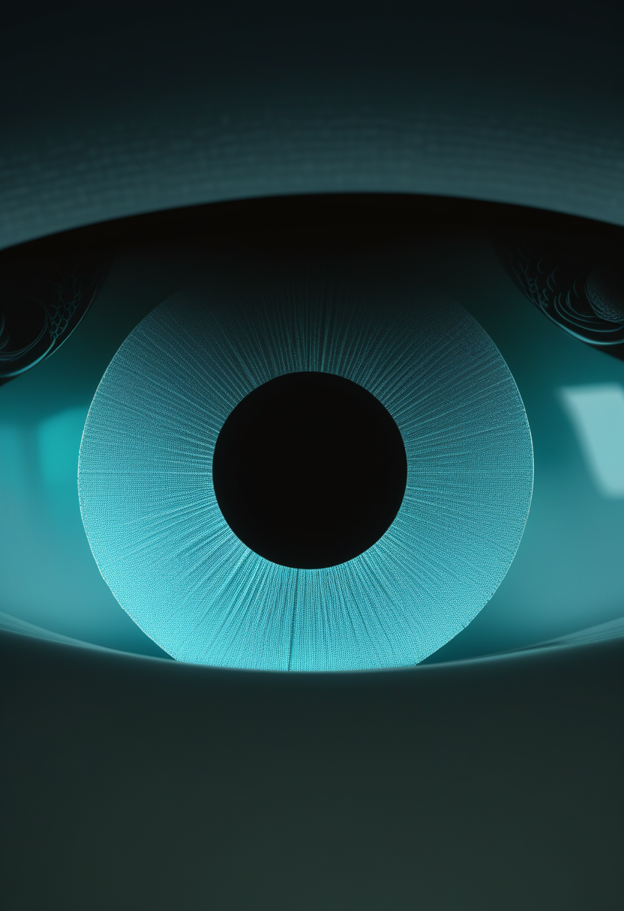
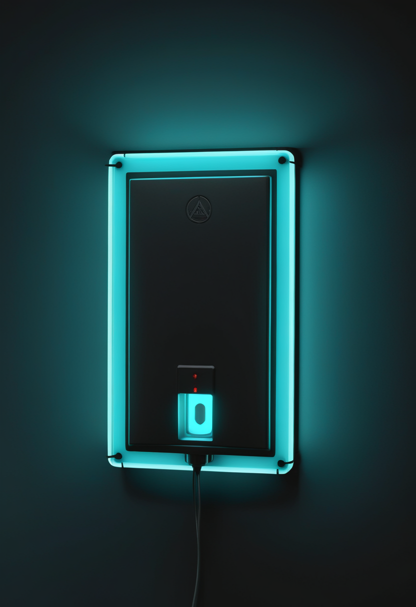
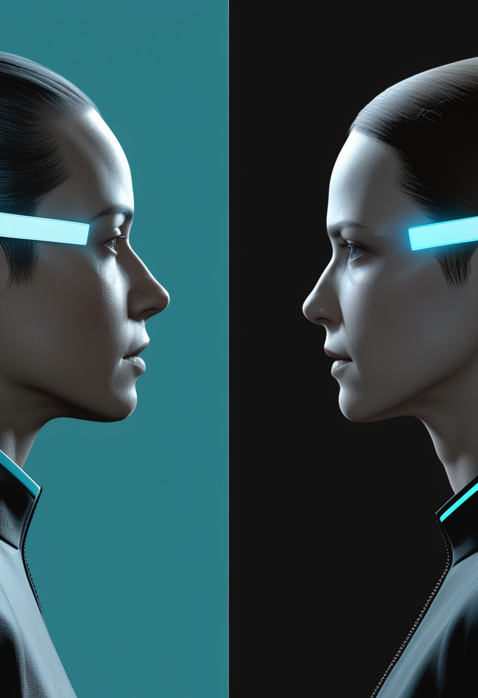

金曜日の便り。元Neuralink幹部が創業したScience Corporationは、網膜下チップPRIMAを初めて遺伝性の若年黄斑変性『スターガルト病』の患者に埋め込み、リハビリ2回目で単語を読めたと発表した。基盤の章ではDRCエボラの米CDC集計(確定9,144例)、米ペンシルベニア州の麻疹1,222例、DRCのmpox死者600人超、名古屋市のインフルエンザ動向を届ける。自由の章ではPRIMAの新適用に加え、磁気ロボットで電極を脳へ誘導するEU事業MINIGRAPHの完了を。畏敬の章では嫦娥6号の試料が示す月のマグマオーシャン循環説、アフリカでの長時間作用型HIV治療、網膜の遺伝子治療GS030の新データを。命の章ではSMAのある英上院議員がAI再現音声で初の議会演説をしたことと、Continuum誌のSMA認知発達総説を。美の章では同じAI音声演説を『声を取り戻す技術』として、そしてアタプエルカ遺跡のホモ・アンテセソル化石24点の発見を取り上げる。

Science Corporation(元Neuralink幹部が2021年に創業)は10月13日、TechCrunch Disruptの場で、2mm角の網膜下チップPRIMAを初めてスターガルト病(若年発症の遺伝性黄斑変性)の患者に埋め込んだと発表した。手術は5月にシドニー眼科病院で行われ(PRIMAlia試験)、リハビリ1回目で文字を、2回目で単語を読めたという。カメラ付き眼鏡と組み合わせ、狭い範囲の白黒の中心視野を補う仕組み。患者1人の初期データで企業発表の段階だが、欧州で加齢黄斑変性向けに販売中の技術が、別の遺伝性疾患へ広がった点が新しい。
SMAのある英上院議員ジェーン・キャンベル氏(サービトンのキャンベル女男爵)が、昔の録音から声の高さやリズムを再現したAI音声を使い、保健法案の第二読会で演説した。英議会の両院でAI音声が使われたのは初めて。2012年から介助者による代読に頼ってきた同氏は『AIに言葉を言わせたのではなく、自分の言葉を話すためにAIを使った』と述べた。
米国神経学会(AAN)の生涯教育誌Continuumの2026年10月号に掲載されたSMA総説は、一部の患者で認知発達の遅れが認識されつつあると指摘した。治療の進歩で長く生きる子どもが増えたことで、運動機能だけでなく認知を含めた発達全体に目を向ける必要が出てきたという。SMA医療の焦点が『生き延びる』から『どう生きるか』へ広がっていることを示す一本。
治療の選択肢が増えた今、SMAの論点は『生き延びる』から『どう生きるか』へ移っている。声を取り戻す技術と、運動以外の発達を見るケアの視点――今日の2本に共通するのは、治療後の人生の『質』への視線だ。
Science Corpのマックス・ホダックCEOがTechCrunch Disrupt(10/13)で発表。シドニー眼科病院のシムノビッチ医師が監督するPRIMAlia試験で、5月に手術した患者が単語を読めるようになったという。視野は狭く色もないため、同社は視野を広げ電極を小さくした次世代機を開発中。同社は脳の表面に置く方式のBCIも開発している。
スペインのINBRAINが主導したEU事業MINIGRAPH(約393万ユーロ)が成果を公表した。Nanoflex RoboticsとETHチューリッヒが開発した磁気ロボットが、X線ガイド下で電極を直線・曲線の経路に誘導し、大型動物でこの手技を確認した。最初の標的はパーキンソン病だが、ヒト試験や臨床使用はまだない。電極を脳へ届ける『経路』そのものを技術革新の対象にした点が特徴。
視覚回復では適用疾患が広がり、埋め込み手技では電極を届ける経路そのものが磁気誘導という新しい段階に入った。どちらも企業発表・動物実験の段階で、独立した検証はこれから。
米CDCによると、コンゴ民主共和国(DRC)のエボラ確定例は9,144例・確定死亡4,410人(10月14日時点、推定例は含まず)。前号で伝えた保健省集計に基づく報道(確定9,066例・死亡4,381人)から数字が更新された。ブンディブギョ型で承認済みのワクチン・治療薬はなく、Reutersはコンゴ史上最大・最悪の流行と報じている。集計機関と時点で数値に差がある点に注意が必要。
ペンシルベニア州保健局の発表によると、麻疹は1,222例に達し、1週間前から86例増え、入院は225人。郡の検視官は今年6人目の麻疹関連死を報告したが、州のサイト上は5人のままで数え方にずれがある(要確認)。隣接するウィスコンシン州でも複数の郡で症例が増えている。

DRCのmpox(サル痘)による死者が600人を超えたとの情報があり、隣国コンゴ共和国で初めての症例が出たとも伝えられている。ただしこれは個人ニュースレターによる要約で、WHOなど公的機関による確認はまだない(要確認)。エボラと並行して複数の感染症がDRC周辺で動いている実情を示す。
名古屋市の第41週(10月5〜11日)インフルエンザ定点当たり報告数は11.04で、前週の11.46からわずかに減少した。全国的な流行が10月に入ってから続く中、主要都市の値が頭打ちの兆しを見せているのか、次週以降の全国値で確かめる必要がある。
エボラは集計機関ごとに数字が割れたまま9,000台を更新し、麻疹はペンシルベニア単独で6人目の死者を数えようとしている。感染症の戦線は一つに収まらず、同時に複数の場所で動いている。
南京大学の恵鶴九氏らは、中国の嫦娥6号が持ち帰った月の裏側の試料(斜長岩・Mgスイート岩・海の玄武岩)を、アポロ・嫦娥5号の表側試料と比較した。月が地球に潮汐固定された後、地球の重力による加熱でマグマオーシャンが大規模に循環し、熱いマグマが表側から裏側へ運ばれたとするモデルを提案している。マントル源は両側でほぼ似ており、違いは主に地殻にあるという。対立する説も多く、これで決着ではない。

NEJMに10月14日掲載された試験によると、服薬の継続が難しいアフリカの成人で、48週時点のウイルス量50コピー/mL未満となった割合は長時間作用型注射群91.0%、経口薬群89.2%とほぼ同等だった。一方、確定ウイルス学的失敗は長時間作用型群で5人、経口群で0人と、治療が効かなかった例は注射群にやや多かった。服薬の負担を減らす選択肢としての可能性と、見極めが必要な点の両方を示すデータ。
NEJM10月8日号に掲載された、晩期網膜色素変性症に対する光遺伝学的遺伝子治療GS030(GenSight社)の第1/2相試験で、主な目的だった安全性では、薬や硝子体内注射に関連すると判断された全身性の有害事象は無かった。探索的評価では10人中6人で光感受性に臨床的に意味のある改善が見られたという。今日の一本の網膜チップ(PRIMA)とは別の方法で、視覚回復を目指す試みが並走している。
視覚回復では『チップ』と『遺伝子治療』という異なる方法が同じ週に数字を出した。月の研究では、潮汐固定後のマグマ循環という大きな仮説が、嫦娥6号の試料で初めて検証可能になっている。
SMAのある英上院議員ジェーン・キャンベル氏(サービトンのキャンベル女男爵)が、昔の録音から声の高さやリズムを再現したAI音声で、保健法案の第二読会で演説した。英議会の両院でAI音声が使われたのは初めて。2012年から介助者の代読に頼ってきた同氏は『AIに言葉を言わせたのではなく、自分の言葉を話すためにAIを使った』と述べた。声という最も個人的な特徴をAIで再現する技術が、議会という公的な場にまで入ってきた一例になる。
スペイン・アタプエルカ遺跡群のグラン・ドリナ遺跡TD6.2層で行われた2026年の発掘シーズンが終了し、ホモ・アンテセソル(先駆者人)に帰属する人骨化石が少なくとも24点見つかったと発表された。アンテセソルは約80万年前にヨーロッパに存在したとされる種で、現代人・ネアンデルタール人双方の祖先に近いと考えられている。発掘チーム自身の発表によるもので、査読を経た分析はこれから。
一つは声という最も個人的な特徴をAIで取り戻す試み、もう一つは80万年前の骨から人類の来歴をたどる試み。人間を『記録する』技術と『遡る』技術が、同じ週に別の時間軸で動いていた。
金曜日の便り。元Neuralink幹部が創業したScience Corporationは、網膜下チップPRIMAを初めて遺伝性の若年黄斑変性『スターガルト病』の患者に埋め込み、リハビリ2回目で単語を読めたと発表した。基盤の章では、DRCエボラが米CDC集計で確定9,144例に更新されたこと、米ペンシルベニア州の麻疹が1,222例に達したこと、DRCのmpox死者が600人を超えたとの情報、名古屋市のインフルエンザがわずかに減少したことを届けた。自由の章では、PRIMAの新適用に加え、磁気ロボットで電極を脳へ誘導するEU事業MINIGRAPHの完了を伝えた。畏敬の章では、嫦娥6号の試料が示す月のマグマオーシャン循環説、アフリカでの長時間作用型HIV治療の経口薬との比較、網膜の遺伝子治療GS030で10人中6人に改善が見られたという新データを取り上げた。命の章では、SMAのある英上院議員がAI再現音声で初の議会演説をしたことと、Continuum誌のSMA認知発達総説を届けた。美の章では、同じAI音声演説を『声を取り戻す技術』として、そしてアタプエルカ遺跡でホモ・アンテセソルの化石24点が見つかったことを伝えた。
では、また明日の朝に。 — JaH